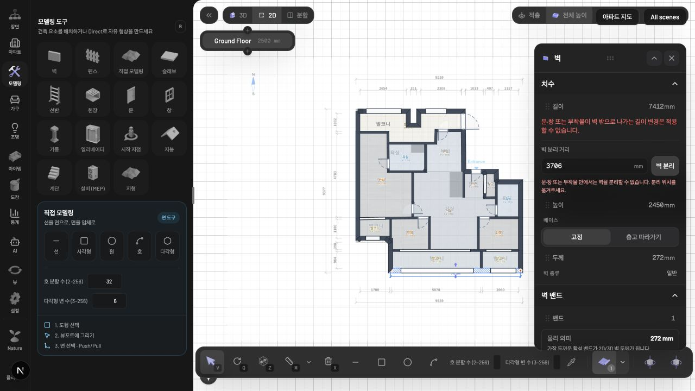
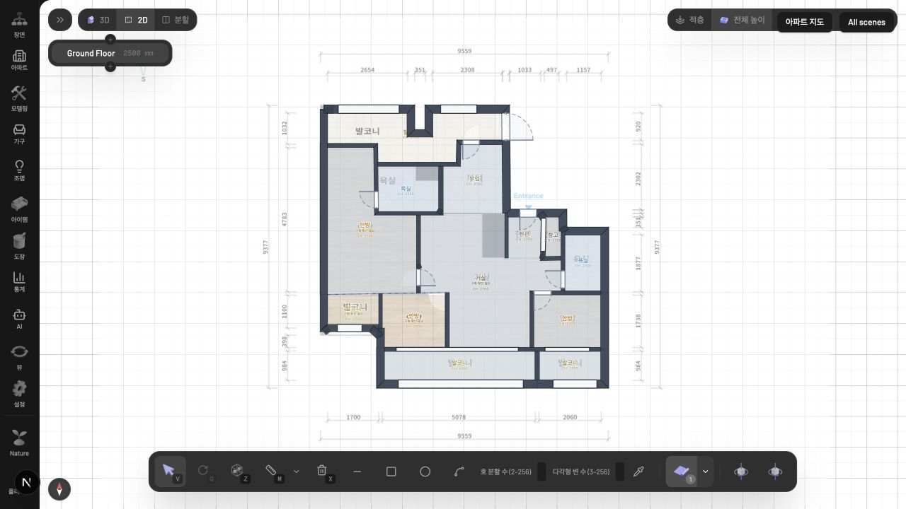
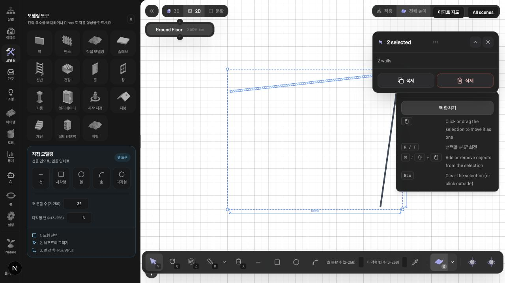

2026-10-01 · 직접 수정 · localhost:3002 · 사용자 원본 장면은 보존하고 QA 사본에서 확인했습니다.
| 문제 | 수정 및 검증 결과 |
|---|---|
| 길이 변경 후 연결 벽 분리 | 공유 끝점을 함께 갱신. 12,828 → 10,000mm 변경 후 두 벽 접점 정확히 일치. 한 번 실행 취소로 함께 복원. |
| 문·창이 벽 밖으로 나감 | 영향받는 모든 호스트의 개구부 범위 검사. 7,412 → 500mm 변경 거부, 저장 그래프 그대로 유지. |
| 분리 버튼 가림 및 오류 안내 | 단일 벽 분리는 속성 패널에 배치. 복수 선택 시 병합 버튼을 가리던 단일 속성 패널 숨김. 6,000mm 분리 후 병합으로 원래 벽과 접점 복원. 개구부 안 분리는 한국어 안내와 함께 거부. |
| 삭제 후 존 경계 방치 | 확인된 닫힌 경계는 따라가고, 잃거나 모호해진 경계는 이름·마감을 보존하며 ‘구획 확인 필요’ 표시. 확인되지 않은 내측 치수 숨김. |
| 실행 취소 후 경고 재생성 | 기록 복원 시 저장 그래프를 재작성하지 않고 파생 공간만 갱신. 실제 UI Undo 전체 그래프 기준 상태와 일치, Redo 전체 그래프 삭제 결과와 일치. |



열린 공간의 의미상 구분과 모호한 존은 자동으로 방 이름과 경계를 추측하지 않습니다. 경고된 공간은 벽 복원 또는 존 경계 확인이 필요합니다. 곡선 벽의 숫자 길이 변경은 지원 범위를 벗어나면 거부합니다. 이번 검증은 직접 2D 편집에 집중했으며, AI 채팅 편집 및 3D 조작 전체 흐름과 전체 도면 인식 정확도는 새로 측정하지 않았습니다.
core의 벽 길이·공간 동기화와 회귀 테스트, wall 속성 패널과 벽 편집 컨트롤, zone 표시·수량 안내, 공용 모델링 매뉴얼을 수정했습니다. 기존 작업을 보존한 이번 변경만의 diff에 정확한 파일과 변경 내용이 있습니다.